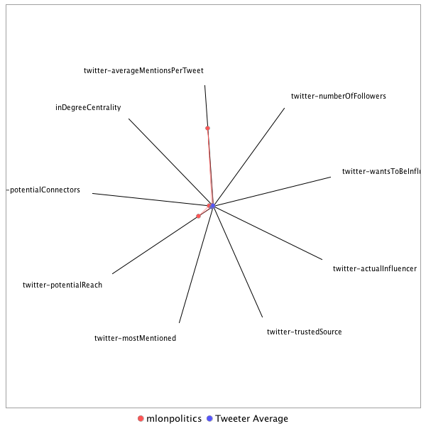

This tweeter has been identified as an influencer. Its target audience and hashtag and word usage are analyzed below.
Basic Statistics
Number of direct followers 11237 The peak number of followers that the tweeter had during any time period. Number of retweeters 2 Number of agents that retweeted the key influencer. Number of secondary followers 3743575 The sum of the followers of those who retweeted the key influencer. Measure Values of Other Influencers node versus Tweeter Average
This compares the measure values of the key influencer with the average values across all tweeters. For each measure line, the center-point means zero and the end-point means the maximum score across all tweeters.

Where was the influencer?
The agent is not recorded as being in any locations. Either he tweeted without geo-tags or we have no information about the tweets he sent.
The agent and its resenders are not recorded as being in any locations. Either they tweeted without geo-tags, or we have no information about the tweets they sent.
What hashtags did the influencer use?
This displays the top ranked hashtags that the influencer and its retweeters used.
Rank hashtag Count 1 TheLead 267 2 MemorialDayWeekend 218 3 CNNsotu 131 4 MemorialDay 38 5 JFK100 14 6 BattleofWanat 10 7 COPKeating 10 8 Dartmouth17s 8 9 Venezuela 8 10 mtal 8 11 GA06 5 12 GoSilent 5 13 TopGun2 5 14 ArmedForcesDay 4 15 DDay 4 16 FathersDay 4 17 FinsburyPark 4 18 LondonBridge 4 19 ManchesterBombing 4 20 MothersDay 4 21 veterans 4 22 BREAKING 3 23 Manchester 3 24 OrlandoUnitedDay 3 25 ParisAgreement 3 26 matl 3 27 ArmyBDay 2 28 BLSdata 2 29 BoroughMarket 2 30 CBG17 2 31 CNN 2 32 Comey 2 33 FBI 2 34 FactChecker 2 35 GA6 2 36 JFKTapes 2 37 JobsReport 2 38 MemorialWeekend 2 39 Montana 2 40 NoDAPL 2 41 PaleyLive 2 42 SC05 2 43 SOTU 2 44 SecDef 2 45 VAGov 2 46 fakenews 2 47 humanrights 2 48 onthisday 2 49 vetcourts 2 50 AHCA 1 51 Afghan 1 52 Afghanistan 1 53 AirAltherr 1 54 Alexandria 1 55 AlexandriaVA 1 56 American 1 57 ArianaGrandeConcert 1 58 BabyDriverMovie 1 59 BecauseofHimICan 1 60 BigSkyBern 1 61 BigSlickKC 1 62 CNNTownHall 1 63 CaptainUnderpants 1 64 ChampionsForChange 1 65 ChelseaIsFree 1 66 ComeyDay 1 67 ComeyYourFired 1 68 CongressionalBaseballGame 1 69 Cronkite 1 70 DAPL 1 71 DDay73 1 72 DPRK 1 73 DataViz 1 74 DeOppressoLiber 1 75 DemConsultantClass 1 76 Erdoğan 1 77 FBIDirector 1 78 FY18NDAA 1 79 FactCheck 1 80 FamilyLegacy 1 81 FightFor15 1 82 FlagDay 1 83 FlashbackFriday 1 84 FlintWaterCrisis 1 85 Flynn 1 86 FortLauderdale 1 87 FunHome 1 88 Getty 1 89 GotYourSix 1 90 GratefulNation 1 91 HFOT 1 92 Hannity 1 93 HappyFathersDay 1 94 Hinesy 1 95 HonorFlight 1 96 HonorThem 1 97 HonortheFallen 1 98 IranAttacks 1 99 Iraq 1 100 JFK 1 Tweet List
This displays all of the tweets of the influencer ordered from earliest to latest. Click on a tweet to see its status in Twitter.
Number Tweet ID Date Message 1 869281567356719104 2017-05-29 15:57:30-04 @jaketapper @JackPosobiec @MichaelCohen212 @benshapiro @RabbiShmuley @ReaganBattalion @GovMikeHuckabee @RichardGrenell @newtgingrich @Acosta @JakeTurx @Scavino45 @seanspicer @HerbKeinon @talshalev1 @YuvalKarni @sfrantzman @horowitz39 @Fahrenthold @mattdpearce @TEN_GOP @yashar @AviMayer @andylassner @AnnCoulter @ANOMALY1 @AsaadHannaa @aarondmiller2 @SethAMandel @LeviSmithUSA @LTCPeterLerner @LindaSuhler @polNewsForever @BraddJaffy @GlennThrush @jdgreenblatt45 @Gil_Hoffman @kylegriffin1 @GodfreyElfwick @NadavPollak @PatrickSvitek @PhilipRucker @PeterAlexander @RitaPanahi @RussOnPolitics @politicalelle @therealroseanne @daveweigel @jdawsey1 @hunterw Mark Rosenberg was killed April 8, 2008, in Baghdad when his vehicle was struck by a makeshift bomb. He was 32 years old. #MemorialDay https://t.co/8fTTABfiIY 2 869282254358556672 2017-05-29 16:00:14-04 @jaketapper @JackPosobiec @MichaelCohen212 @benshapiro @RabbiShmuley @ReaganBattalion @GovMikeHuckabee @RichardGrenell @newtgingrich @Acosta @JakeTurx @Scavino45 @seanspicer @HerbKeinon @talshalev1 @YuvalKarni @sfrantzman @horowitz39 @Fahrenthold @mattdpearce @TEN_GOP @yashar @AviMayer @andylassner @AnnCoulter @ANOMALY1 @AsaadHannaa @aarondmiller2 @SethAMandel @LeviSmithUSA @LTCPeterLerner @LindaSuhler @polNewsForever @BraddJaffy @GlennThrush @jdgreenblatt45 @Gil_Hoffman @kylegriffin1 @GodfreyElfwick @NadavPollak @PatrickSvitek @PhilipRucker @PeterAlexander @RitaPanahi @RussOnPolitics @politicalelle @therealroseanne @daveweigel @jdawsey1 @hunterw Jonathan Yelner was killed April 29, 2008, in Afghanistan when his vehicle was struck by an improvised explosive device. He was 24 y/o. https://t.co/gBlZbJjA0H 3 869265190327595009 2017-05-29 14:52:26-04 @jaketapper @JackPosobiec @MichaelCohen212 @benshapiro @RabbiShmuley @ReaganBattalion @GovMikeHuckabee @RichardGrenell @newtgingrich @Acosta @JakeTurx @Scavino45 @seanspicer @HerbKeinon @talshalev1 @YuvalKarni @sfrantzman @horowitz39 @Fahrenthold @mattdpearce @TEN_GOP @yashar @AviMayer @andylassner @AnnCoulter @ANOMALY1 @AsaadHannaa @aarondmiller2 @SethAMandel Dustin Schrage’s body was found May 6, 2004 reportedly after drowning while on a mission. Schrage was 20 years old. #MemorialDay https://t.co/eumhuHHroN 4 872876347072368641 2017-06-08 14:01:53-04 Al Jazeera has been hacked https://t.co/ZCQ5W6k8Rk